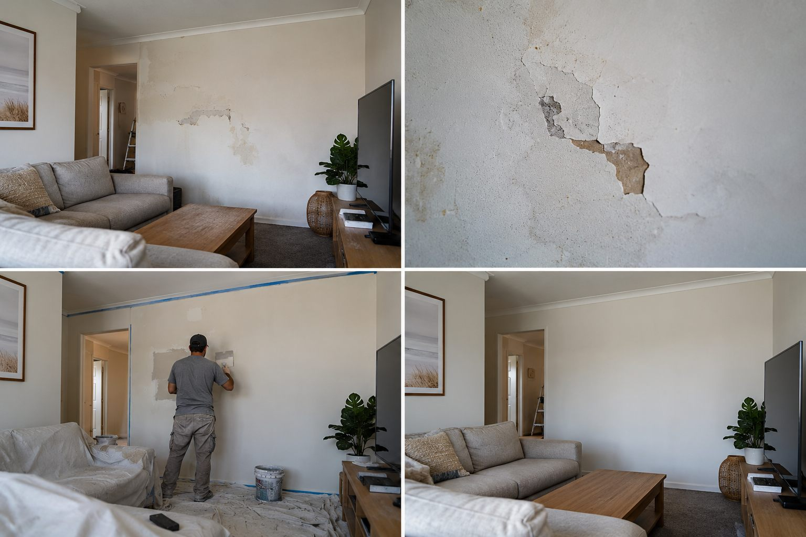
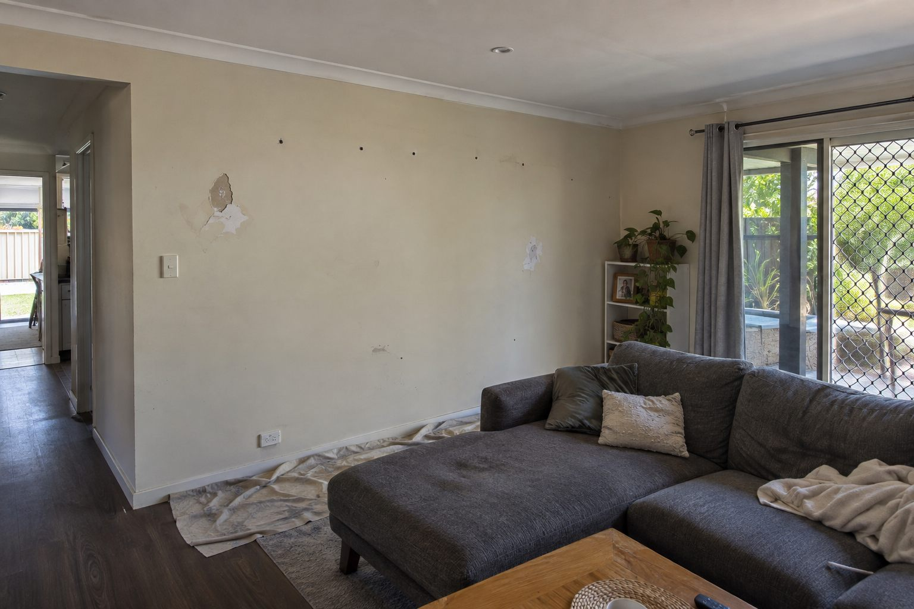
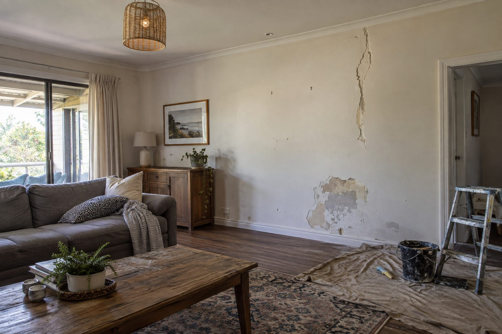

Recent project
Interior wall repair & painting touch-ups
A photographic sequence documenting interior wall repair and painting touch-ups in a residential room.
The project
Interior wall repair and painting touch-ups
These images show visible wall damage in a living room, through surface preparation and repair work to a refreshed painted wall. Common repair concerns include interior wall repair, a patched area and painting touch-ups. Describe the issue to Ellis to arrange an assessment; existing photos are optional.
Project gallery
Wall repair and touch-up details shown




Contact Ellis Perth
Gyprock Patching & Painting in Perth
Contact Ellis directly to arrange an on-site assessment. Tell us what needs repairing and your Perth suburb or postcode. Existing photos and approximate measurements are optional; we inspect the property and confirm the repair plan and written quote.